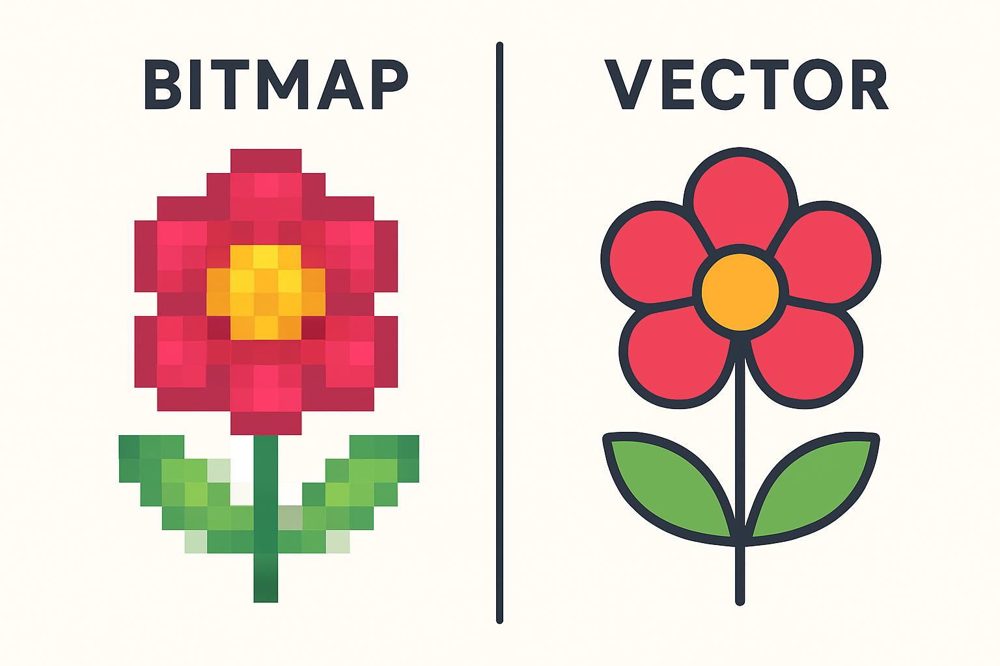

Wat is compressie?
Compressie betekent dat een bestand kleiner wordt gemaakt. Hierdoor neemt het minder opslagruimte in. Dit wordt bijvoorbeeld gebruikt bij foto's en video's.
Bitmap
Een bitmapafbeelding bestaat uit kleine puntjes. Deze puntjes heten pixels. Foto's zijn meestal bitmapafbeeldingen. Als je ze heel erg vergroot, kunnen de pixels zichtbaar worden.
Vector
Een vectorafbeelding bestaat uit lijnen en vormen die met berekeningen worden gemaakt. Hierdoor kun je de afbeelding groter of kleiner maken zonder dat deze onscherp wordt. Logo's worden vaak als vector opgeslagen.
Bitmap wordt dus vaak gebruikt voor foto's en vector vooral voor logo's en tekeningen.
